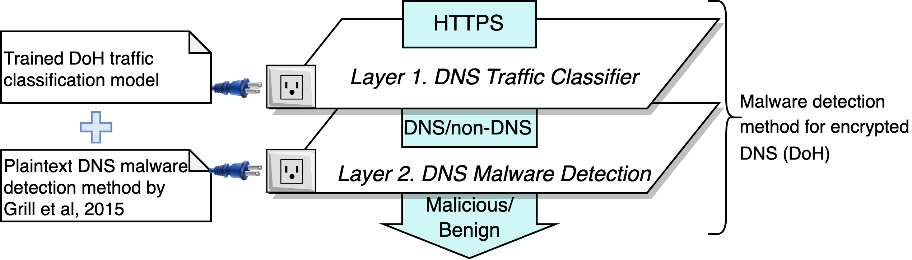
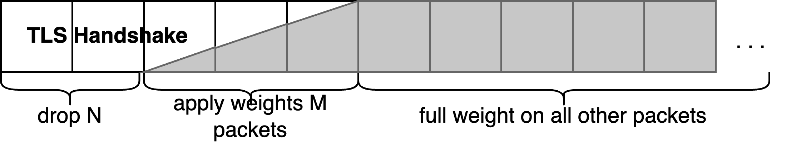
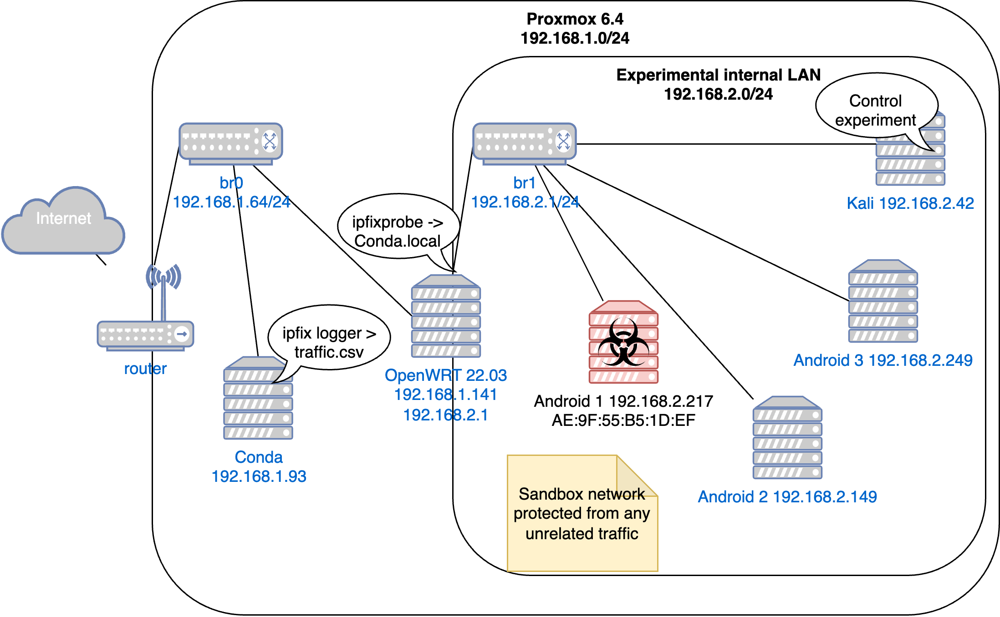
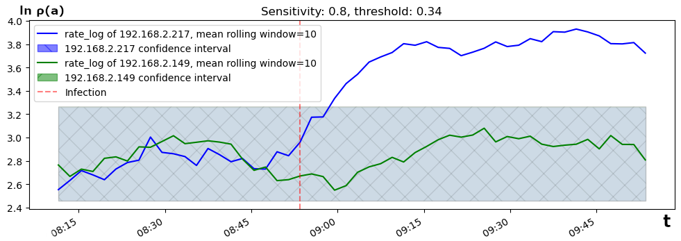

RADER Roman, JEŘÁBEK Kamil and RYŠAVÝ Ondřej. Detecting DoH-Based Data Exfiltration: FluBot Malware Case Study. In: IEEE 48th Conference on Local Computer Networks (LCN). Daytona Beach: IEEE Computer Society, 2023, pp. 50-54. ISBN 979-8-3503-0074-1.
Attendance at the 48th IEEE Conference on Local Computer Networks
Our paper on Detecting DoH-based data exfiltration was published at the 48th IEEE Conference on Local Computer Networks, which took place from October 1-5, 2023, in Daytona Beach, Florida, USA. Paper is authored by Roman Rader, Kamil Jerabek, Ondrej Rysavy.
Introduction
Paper describes a case-study on detecting the FluBot, an Android banking Trojan active in 2021-2022. Prior work on DoH malware detection has focused on machine learning classifiers to detect malware flows within DoH traffic. Our paper introduces a two-layer detection method.
Two-Layered DoH Malware Detection
This approach allows the same malware detection algorithm to be used for different encrypted DNS protocols (e.g., DNS-over-TLS, DoQ) by plugging in different classifiers to the first layer.
Also, now we can apply malware-detection algorithms originally designed for the plaintext DNS to the DoH traffic by plugging in detection algorithms to the second layer.

Application of Plaintext DNS malware detection algorithm to the encrypted DNS using DoH classification model.Algorithm Details
- Layer 1: Model for DNS-over-HTTPS detection was trained on the extensive DoH traffic dataset [1]. Layer 1 allows us to use previously developed plaintext DNS-based malware-detection algorithms to the encrypted DNS traffic.
- Layer 2: We used a modified method by [2] which uses a ratio of DNS requests and contacted IP addresses for each host in the local network to detect anomaly malicious activity: $\ln~\rho(a)~=~\ln {\frac{\delta(a)}{\pi(a) + 1}}$. $\delta(a)$ - number of DNS requests generated by host $a$, $\pi(a)$ - count of unique IP addresses contacted by host $a$. However, a two-layered approach allows to plug in any other plaintext DNS malware detection method.
DoH Detection Tweaks
-
Random Forest model proved to be the best comparing to Histogram-based Gradient Boosting and Logistic Regression. Features: stddev, mean, variance from packet sizes and inter-packet times grouped by: incoming, outgoing, and combined packets.
-
To enhance accuracy of DoH flows detection, we reduce the impact of initial TLS handshake packets, which often reflect server deployment rather than actual traffic. As seen on the figure, we have applied weights to the first few packets based on their position in the handshake sequence to account for TLS handshake varying length and ensure that no important information is lost.

TLS Handshake influence elimination by applying lower weights to~the~first N, M <= 6 packets.Experimental Setup
We created a sandbox network of three Android x86 emulators and one Linux instance to simulate the malware detection method. We connected these machines via an OpenWRT router with ipfixprobe tool to collect IPFIX flows to capture network traffic at the border.

Sandbox network used to collect FluBot malware traffic, as well as benign traffic from other Android devices.Results of Two Experiments
-
In Experiment 1 (Clean Room), one Android VM was infected with malware, while two others stayed clean. We scripted the clean VMs to browse benign websites. $\ln \rho(a)$ was calculated for all machines to validate malware detection algorithm.
-
In Experiment 2 (Real-World Scenario), we infected one Android VM with malware and scripted it to generate benign traffic at the same time to test our method’s ability to detect the infected machine amidst normal browsing interference. We have applied an ARIMA-based outlier detection using confidence intervals based on the user’s typical behavior (see figure).

The moment of infection of an Android with FluBot. The value of~$\ln \rho(a)$ rises above the confidence interval after infection -> IoC.Conclusions
We introduced a two-layer classification method to detect FluBot malware exploiting DoH covert channels. Future research will focus on enhancing detection accuracy and extending the model to other DNS-based covert channels like DoH, DoT, and DoQ.
- Experimental jupyter notebooks
- DOI 10.1109/LCN58197.2023.10223341
- Citation:
@INPROCEEDINGS{10223341,
author={Rader, Roman and Jerabek, Kamil and Rysavy, Ondrej},
booktitle={2023 IEEE 48th Conference on Local Computer Networks (LCN)},
title={Detecting DoH-Based Data Exfiltration: FluBot Malware Case Study},
year={2023},
volume={},
number={},
pages={1-4},
abstract={This paper presents a novel approach for detecting the FluBot malware, an advanced Android banking Trojan that has been observed in active attacks in 2021 and 2022. The proposed method uses a two-layer detection mechanism to identify FluBot network connections. In the first layer, a machine learning algorithm is used to detect DNS-over-HTTPS (DoH) within Netflow records. The second layer uses a modified version of an existing domain generation algorithm (DGA) detection algorithm to target the DoH connections associated with the FluBot malware specifically. To evaluate the effectiveness of this approach, we used a dataset consisting of FluBot network traffic captured in a controlled sandbox environment. The preliminary results show that our DoH classifier achieves high accuracy and detection rates in identifying instances of FluBot malware, while maintaining a low false positive rate.},
keywords={},
doi={10.1109/LCN58197.2023.10223341},
ISSN={2832-1421},
month={Oct},}
References:
- [1] K. Jeřábek, K. Hynek, T. Čejka, and O. Ryšavỳ, “Collection of datasets with dns over https traffic,” Data in Brief, vol. 42, p. 108310, 2022.
- [2] M. Grill, I. Nikolaev, V. Valeros, and M. Rehak, “Detecting dga malware using netflow,” in 2015 IFIP/IEEE International Symposium on Integrated Network Management (IM), pp. 1304–1309, IEEE, 2015.
- [3] H. Salsabila, S. Mardhiyah, and R. B. Hadiprakoso, “Flubot malware hybrid analysis on android operating system,” in 2022 International Conference on Informatics, Multimedia, Cyber and Information System (ICIMCIS), pp. 202–206, IEEE, 2022.
This work was supported by the Technology Agency of the Czech Republic as part of the FW03010099 project: Context-based analysis of encrypted traffic using flow data.